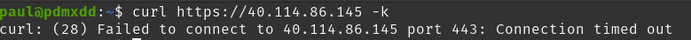
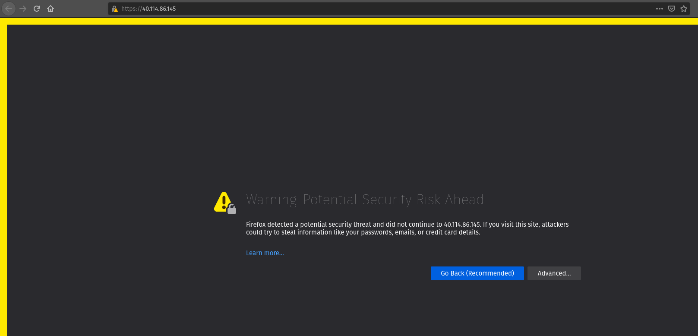
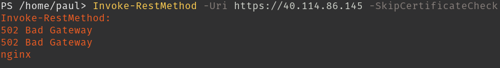
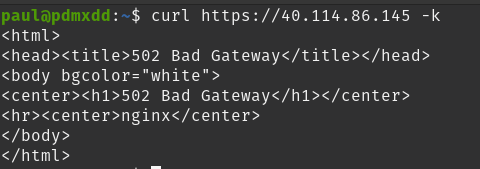
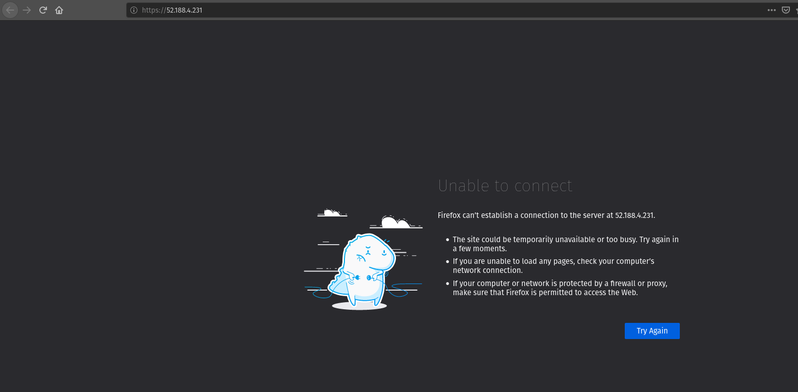
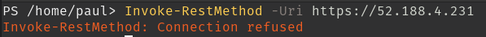
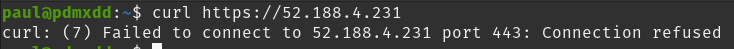
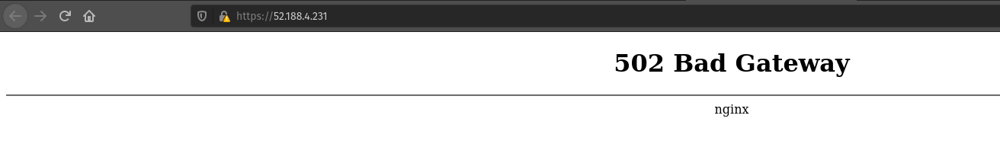

Troubleshooting is one of the most important skills to the Operations professional.
Troubleshooting is the process of:
As you can see from this list research is a foundational aspect of troubleshooting. After an issue has been discovered it is usually up to the Operations team to identify the issue, research the issue, and ultimately fix the issue. Troubleshooting skills are improved through experience. At the start of your career you won’t have much knowledge of what can wrong, and how to fix a broken deployment. However, as you continue to research and fix issues your troubleshooting skills will grow with your knowledge.
In this article we will discuss issues you may have already experienced through this class, talk about a methodology to assist you in researching issues, and talk about some of the basic tools you can use while troubleshooting.
note
This article is in no way exhaustive, as you continue throughout your career you will learn about new techniques, tools, and solutions to issues.
Although development troubleshooting will be mentioned this class will primarily focus on Operations troubleshooting.
To start let’s build some troubleshooting knowledge by examining some issues we may have seen already when deploying the Coding Events API.
Throughout the Azure portion of this class we have focused on operations and we will explore more operations issues. However, identifying, communicating, and resolving development issues is often a responsibility of the DevOps professional.
We will look at some of the common operations and development issues.
Note
The issues throughout this article will be framed as issues in the Coding Events API. Many of the issues discussed may be similar, or identical, to issues seen across many different deployments.
Operation issues are issues that don’t involve the source code of the deployed application. This could be issues relating to:
appsettings.json or a Key Vault secret)The first example will walk you through all of the troubleshooting steps to illustrate the process. The remaining examples will simply discuss or show the issue and talk about the potential root causes.
Note
The following group walkthrough will require you to perform the troubleshooting steps together. If you pay attention to the potential root causes, you may figure out how to solve some of the issues will a relatively small amount of research.
The troubleshooting process is kicked off by an issue brought to our attention. In this case someone sends us a screenshot of their browser encountering a Connection Timeout when attempting to access our API in the browser:
Our first step is to identify this issue by reproducing it on our system. This will rule out the possibility of end user error.
First up let’s reproduce the issue in the exact way the end user did with a request from the browser:
Looks like we are getting the same issue. Let’s reproduce this error with PowerShell using Invoke-RestMethod from our terminal:
Since this is a learning environment let’s reproduce the issue again this time from Bash using curl:
We can definitively state that a Connection Timeout is happening when users attempt to access the Coding Events API on port 443 from the browser, Invoke-RestMethod and curl!
The next step is to research the potential causes of the issue. Typically you would rely on your experience and research skills to come up with a list of potential causes, but to save time we have provided them for you:
The next step is to isolate the root cause of the issue by systematically eliminating potential causes until we have found the root cause, or have exhausted our known options.
In this case we would need to check that the initial request was going to the correct URL, that the VM is currently running, and that the VM has the appropriate NSG inbound security rule for port 443. At this point in time in the class you should know how to do these things through the Azure Web Portal or the AZ CLI.
Just to continue the example let’s say the root cause was that the VM lacks a NSG rule for port 443, and we discovered this by looking at all three of the potential issues and the only one that was incorrect were the NSG rules.
Our next step would be to research a solution to the issue, in this case we simply need to create a new NSG inbound rule for port 443.
After fixing the issue our final step is to reproduce the steps to ensure our issue has been resolved!
Browser:
Our screen advanced and now we are getting the message about accepting the risk associated with a self-signed certificate. That’s what we expect! Let’s checkout PowerShell and Bash:
PowerShell:
Bash:
Uh oh!
We are getting a new error.
The good news is we resolved our connection timeout issue by opening port 443 NSG inbound rule. Our fix resolved the issue, we are no longer experiencing a Connection Timeout error. We have solved this error and need to move on to the next one which according to our web requests is a 502 Bad Gateway.
Note
An issue is not always solved with one change. In some instances a combination of steps are necessary to solve one issue.
In this case solving one issue revealed a new issue. Revealing a new issue is great progress in troubleshooting assuming you have checked that your fix resolved the initial issue, which we have done!
The final step is being able to communicate this issue with others:
The Coding Events API located at https://40.114.86.145/ was not responding to HTTP requests in the browser, Invoke-RestMethod or curl. Users were experiencing a Connection Timeout error. We researched potential causes for this issue and determined that the Virtual Machine did not have a NSG inbound rule for port 443. We opened this port to all traffic and the issue was fixed. Connection Timeout errors have not been experienced across Invoke-RestMethod, curl or the browser after making the change.
A user reports from the browser:
We replicate the issue from PowerShell:
We replicate the issue from Bash:
We research potential causes:
We isolate the root cause of the issue by eliminating potential causes. It is determined that the VM does not have a running application that is listening on port 443.
We research fixes for the problem and determine a tool called service that allows you to check the status of services and allow you to start services.
We implement the fix for the issue by starting NGINX using the service tool.
We check that NGINX is successfully running this time using the service tool. Then we verify that our fix resolved the problem by accessing the application in the browser, from PowerShell and Bash.
Users were reporting a connection refused when making HTTP requests to the Coding Events API. The issue was confirmed by using the browser, Invoke-RestMethod and curl. It was determined that the NGINX web server was not running. We started the NGINX web server and the issue was resolved. We verified the issue was resolved by using a web browser, Invoke-RestMethod and curl.
From the browser:
Research the error code to determine potential causes:
A bad gateway is an issue between servers. In the case of our Coding Events API we have two web servers NGINX which proxies requests to the Coding Events API server.
Research potential causes:
coding-events-api service was never startedcoding-events-api is not configured to start itself on a rebootIsolate the root cause by systematically checking the potential causes to determine the VM was restarted and the coding-events-api was not configured to restart itself after a VM reboot.
To fix the issue we will need to start the coding-events-api which we can do with the service tool we previously learned about, however to keep this issue from happening in the future we need to figure out how to make the coding-events-api restart itself if the VM reboots. Our research resulted in systemctl enable which gives us the ability to start a service on reboot, and it will attempt to restart itself any time it goes down!
We implement the fix by using systemctl enable and service to start the service.
We check that the coding-events-api is running by using service again and by making a request to the API in the browser, from PowerShell and from Bash!
Users were reporting a 502 Bad Gateway. Reports were confirmed in browser and by using Invoke-RestMethod and curl. It was determined that the coding-events-api was not running after a recent VM reboot. The API was started with the service tool and the service was enabled so it will automatically start the next time the VM reboots.
Development issues relate to the source code of a deployed application. Ideally these issues are discovered before reaching the live production environment by automated tests and Quality Assurance testers. However, sometimes these issues are discovered by end users who usually report that the application is not behaving correctly.
The deployment isn’t necessarily broken, however the application is not behaving properly.
A user sends a report that they received an HTTP response of 500 Internal Server Error when sending a GET request for a specific coding event.
A 500 Internal Server Error is almost always the result of a runtime error within the source code of the application.
We first reproduce the issue by requesting the specific coding event, and then we continue attempting to reproduce the issue with other specific coding events. We are trying to determine if it is something special about this one coding event, or if it is a behavior seen across all coding events. In this case it’s just this specific coding event that is experiencing this issue.
In researching potential causes across the internet and talking to some of the developers on the team we come up with one potential reason:
It’s a short list, but at least we can check something.
We fire up MySQL and make a request for the specific coding events record. We notice this coding event has some special characters in it â€. We put in a breakpoint to pause the application before it pulls the data out of the database and step through. Alas as our API tries to serialize the special characters the ORM throws an error and our API returns a 500 Internal Server Error.
Next we research solving this error and find a couple of solutions:
It is never a good idea to change the underlying data that is owned by end users so the first option is out! The remaining two options have obvious pros and cons. It would be faster to implement the third party library, however we would need to research the library to make sure it doesn’t contain insecure code and that it won’t break any of our existing functionality. Writing our own library would give us full control and the ability to make it as secure as we need, but would take development time.
Note
The decision between implementing a third party library and writing an in house solution is one that is typically made by management and senior level engineers. This is a situation in which effectively communicating the issue is extremely important!
Being a junior dev we decide this issue needs to be elevated to our superior as we don’t feel comfortable reviewing the security of a third party library.
We explain the issue, the solutions we found, and pass the information to our senior who thanks us for not only finding the issue, but with researching potential fixes. The senior engineers will research the third party library and management will decide on the proper course of action!
An HTTP 500 Internal Server Error was encountered when a database record contained various special characters. Upon debugging the application it was discovered that the current ORM serialization libraries were incapable of working with various special characters. The issue was elevated to senior developers who are determining on how to resolve the issue.
Note
The Coding Events API does not behave this way! This was simply an example of how a 500 Internal Server Error could occur and how you may resolve, or in this case, identify, isolate, research, and pass it to a more senior developer.
A user reports a bug in the API. It isn’t throwing any errors, but the application is not behaving correctly. When the user deletes a coding event they are the owner of they can still view and edit the coding event.
An API bug is almost always the result of a logic error within the source code of the application.
We first reproduce the issue with a copy of the exact event in which we also behave the incorrect DELETE error. We also notice that any coding event we create cannot be deleted despite a proper DELETE request coming through.
We research the issue, luckily this is easy because we know how a RESTful API works and feel confident looking at the source code. Upon looking at the source code we can see the line that sends the resource deletion to the ORM is commented out and skips straight to sending back a 204 No Content! Our research indicates:
We build the project locally on our machine and make the change. It seems to work, however since this is not a project we are a developer for we will just communicate this issue and resolution to the dev team responsible for this project. After all the dev team may have their reasons for that specific line we edited.
Luckily we are very capable of explaining the issue, our research, and our proposed solution to the problem. After communicating it to them the dev team will be responsible for making the change and running it through the automated tests to make sure the change doesn’t result in any unexpected behaviors.
Users reported that after deleting an event the event was still accessible. We reproduced the issue and found that the reported behavior was consistent across all events. Upon investigating the issue it was determined that the RESTful API event DELETE method was not implemented correctly. The dev team needs to re-examine this method to determine why the RESTful API is not deleting resources correctly.
Note
The Coding Events API does not behave this way! This was an example to illustrate a logic error in a deployed application.
As you may have realized troubleshooting follows a very specific pattern. The pattern is pretty simple to follow once you have come up with a list of potential causes. You will learn many of the potential causes throughout your career, but when you are first starting it is difficult to know many potential causes.
A highly beneficial tool for determining potential causes is having a strong mental model of the deployment. If you can recognize the individual components and are aware of how the components can fail, or be misconfigured you are well on your way to performing a root cause analysis.
To perform the root cause analysis you need potential causes which you can create by categorizing similar issues together. Once you have created a list of possible issues in each category you will have a place to start isolating potential issues to find the root cause. The levels are completely arbitrary, and differ between deployments. These categories are a tool used to help you determine potential causes until you’ve increased your experience.
Let’s briefly define the different levels we could encounter an issue in our Coding Events API:
The networking of our system. The Coding Events API doesn’t contain much networking and only consists of the Network Security Group rules.
However for more complex deployment you may also consider:
Our Coding Events API only works with two services:
Not only must these services exist, and be accessible to the deployed application they must be configured properly as well. In the case of our API our Key Vault must have a secret, and most grant the VM get access to the secret. Our AADB2C must be configured to issue identity tokens and access tokens. Our AADB2C tenant must have exposed the registered Coding Events API and appropriate scopes must be granted for the registered front end application, Postman.
Our Coding Events API has a lot of things going on at the Host level inside the VM we must have:
appsettings.jsonNote
In this class we have been working with a VM embedded database. In many real-world deployments this database would be a service that is external to the VM. For our deployment we consider any database issues to be at the Host level.
As a reminder troubleshooting is the process of:
When you are first starting it might be easiest for you to check each individual aspect of the deployment. With a simple deployment like our Coding Events API this wouldn’t be difficult. You would need to simply understand all the components of the deployment and then just check their configurations one by one until you found the issue. This can be an effective way to troubleshoot a deployment, but it is very time consuming.
A better approach is to have a mental model of the deployment and then ask questions that lead you to the root cause of the issue.
Note
It is this question and answer approach that makes experience extremely valuable when troubleshooting. If you have seen the exact problem before and found a solution it will be easier for you to resolve that issue again because you are now aware of more potential questions and answers.
In the Connection Timeout section above you were presented with three potential causes of the Connection Timeout issue within the Coding Events API.
Let’s review them again:
When we make a request from the browser to the Coding Events API (https://<coding-events-api-public-ip>) if a Connection Timeout issue is noticed we would need to answer three simple questions to find the root cause of our issue:
If the answer to any of these questions is no we have found a potential solution to the issue.
To resolve this issue we will need to fix the question, or questions, that we responded no to. After ensuring that all three of these things are correct we make a new request to Coding Events API to see if the issue was resolved.
Note
When you are starting out it is a good idea to try each question we responded no to by itself and re-try the request. This will help you isolate the issue, so upon solving the issue you know definitively what caused the issue.
Understanding these potential causes comes from understanding the components of the deployment, research and experience. When you are starting with troubleshooting you don’t have much experience so you will have to lean on your research skills to figure out the potential causes to a problem.
Note
Research looks a little different for everyone as we all learn in different ways:
Usually it comes down to a combination of research forms to find the root cause of an issue.
After building a mental model of the deployment you can build a troubleshooting script of questions to ask when diagnosing issues for a specific deployment.
An example troubleshooting script for the Coding Events API is provided below:
Note
If you don’t know the category research it by talking with teammates, or searching the internet for individual’s that have had similar experiences.
You can then create a script of possible solutions based on the questions you answered above:
journalctl -u coding-events-api)?Using a troubleshooting question script in combination with the steps of troubleshooting and some persistence on your part can provide you with the information necessary to solve a problem.
Remember that resolving one issue can bring a new issue to the service. Seeing a change in error message or behavior in the deployment is a great hint towards fixing the deployment!
The most effective way to build your skills in troubleshooting is by practicing troubleshooting. Each time you solve a new issue you will learn a new solution and you will increase your ability to research issues. A very beneficial thing to do is to build your own troubleshooting script. The questions above give a good introduction for a troubleshooting script, as you continue to learn more about Operations continue adding to the script with your new experiences.
Identifying an issue is sometimes the most difficult part of troubleshooting. As we’ve mentioned multiple times as you gain more experience it will become easier to identify issues.
For now knowing what some of the most common issues encountered are, and being able to ask questions about your deployment will be your two biggest tools for identifying an issue.
Warning
When you are still in the process of identifying an issue it is crucial to not make any changes!
Every change you make needs to be accounted for because you may need to undo the change to put the system back in its original state. Changes are necessary to resolve the issue, but while you are still identifying and researching you want the system to exist in its initial state.
Let’s take a look at some of the most common issues seen in deployments (this list is not exhaustive):
| Error Message | Description | Common cause |
|---|---|---|
| Connection Refused | The server received the request, but refuses to handle it | no application listening on the given port |
| Connection Timeout | The server did not respond to the client request within a specific time period | missing NSG inbound rule |
| HTTP Status Code: 502 Bad Gateway | A server received an incorrect response from another server | web server is running, but the application is not |
| HTTP Status Code: 401 Unauthorized | The request did not include credentials indicating a user needs to authenticate | credentials were not included |
| HTTP Status Code: 403 Forbidden | The request included credentials, but the authenticated user does not have the proper level of authorization | credentials are not correct, or have not been configured properly |
| HTTP Status Code: 500 Internal Server Error | The request was received, however the server encountered an issue it doesn’t know how to resolve | runtime error in the source code |
As you may have noticed may of the most common issues are HTTP status codes. These status codes are a standard across HTTP so learning the various categories and individual status codes will be invaluable when troubleshooting a web deployment.
Communicating the issue is a simple as defining each part of the troubleshooting process you have worked through so far:
State how the problem was identified. State how the problem was proven through reproduction. State the potential causes that were discovered. State the solution to the problem. State how the solution was verified.